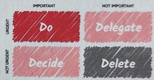
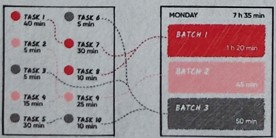

Eat That Frog

Do the most imporatan & difficult tasks first thing in the morning.
Works well for people who struggle with procrastination.
Pomodoro
25 minutes of work, 5-minute break, and then a longer break.
Works well for people who struggle with distractions
2-Minute Rule
If a task can be completed in 2 min or less, do it right away.
Works for boosting productivity and reducing procrastination.
1-3-5 Method

By focusing on a limited number of tasks at different levels of complexity, you can stay organized
throughout the day.
Works well for those who struggle with overwhelm.
Eisenhower Matrix

Organize work in four quadrants and decide on urgent vs imporatan & noturgne vs not important
factors.
Works well for people who have to deal with a lot of decision-making.
Getting Things Done (GTD)
Add all tasks to a list. If the task is around 2 minutes of work, do it instantly, else - schedule
it.
Works well for people who like to-do lists and long-term planning.
Pickle Jar Theory
Add a finite amount of tasks in a day. Identify what is useful and what is not useful.
Works well for people who love creative thinking.
Task Batching Technique

Assign time blocks for the tasks in your day. Most effective with task batching.
Works well for people who manage multiple responsibilities or projects.